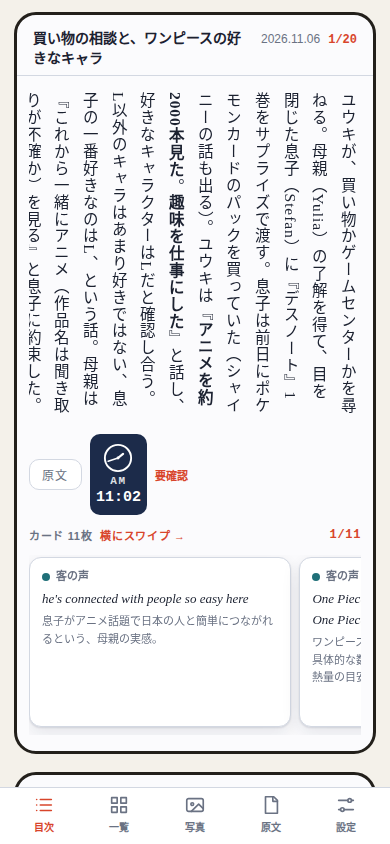
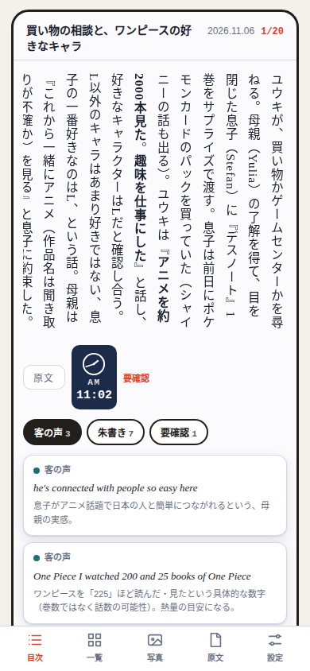
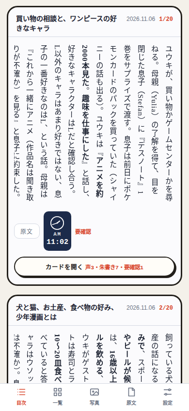
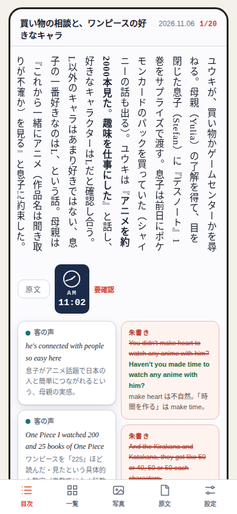
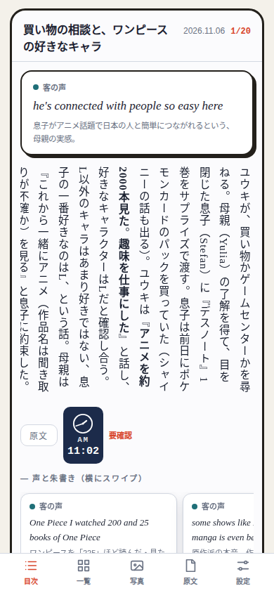

TOUR LOG — READING PAGE SMARTPHONE LAYOUT
新形式の読み物ページ（Yuliaさん回・本番そのまま）を土台に、スマホ幅（390px）での配置だけを変えた5案です。全案のテーマは、カードの多い場面の縦の長さ。場面1「買い物の相談と、ワンピースの好きなキャラ」は客の声3＋朱書き7＋要確認1の計11枚が縦積みになり、場面の高さが現行で約1,781pxあります。各案がこれをどこまで縮めるかを、同じ場面の実寸スクショで比べられます。PC幅の表示は全案とも現行のままです。
狙い：カードの縦積みをやめて横スワイプに変え、場面の縦をカード1枚分の高さに収める。何枚目か分かるカウンタ付き。
場面1の高さ 1,781px → 741px（−58%）

狙い：客の声・朱書き・要確認をタブで分け、見えているのは1グループだけにする。読みたい種類に一直線に届く。
場面1の高さ 1,781px → 905px（−49%）

狙い：本文先行。カードは最初たたんでおき、ボタンで開く。本文だけ追う読み方では場面が最短になる。
場面1の高さ 1,781px → 575px（−68%）

狙い：カードを左右2列に詰めて縦を縮める。タップやスワイプの操作なしで、全部のカードがそのまま見える。
場面1の高さ 1,781px → 1,492px（−16%）

狙い：最初の客の声を大きな特集カードに格上げし、残りのカードは細い帯の横スワイプで流す。写真と本文を主役にする。
場面1の高さ 1,781px → 905px（−49%）

※ 全案とも土台は本番の読み物ページ（Yuliaさん回）そのまま。変えたのはスマホ幅（640px以下）の配置だけで、PC幅の表示は現行どおりです。「実寸で開く」から実際のページとして触れます（カルーセルのスワイプ、タブ、開閉ボタンも動きます）。高さは場面1を390px幅で実測した値です。